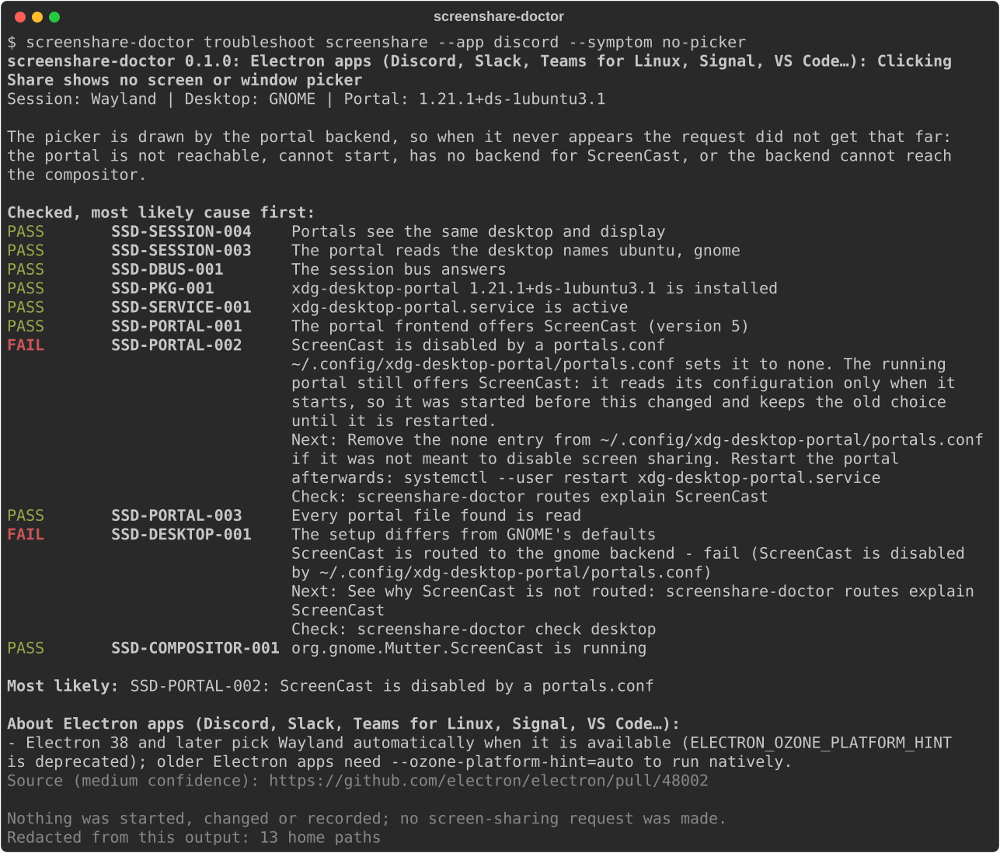

You click Share screen and get no picker, a black frame or the wrong windows. The cause can sit in the app, the xdg-desktop-portal routing, the desktop's portal backend, PipeWire, WirePlumber or the compositor. Screenshare Doctor starts from the app and what you see, checks the whole chain without touching it, and tells you which link is broken and how to check the fix.

portals.conf in
~/.config.Install
uv tool install git+https://github.com/BhuwanJoshi-01/screenshare-doctor
screenshare-doctor troubleshoot screenshare --app firefox --symptom no-picker
screenshare-doctor doctorNeeds Python 3.11 or newer on Linux.
What it promises
- Passive. No screen-sharing request, no picker, nothing recorded. A portal that is not running is reported, not started; PipeWire is only asked when it already runs.
- The portal's own rules.
routes explainfollows xdg-desktop-portal's backend selection for your version, then checks the prediction on D-Bus: configured is not the same as working. - Unknown is not a pass. A check that could not run never shows as green.
- Shareable reports. Home paths, names, secrets and tokens are redacted before anything is printed, and each report says what was removed.